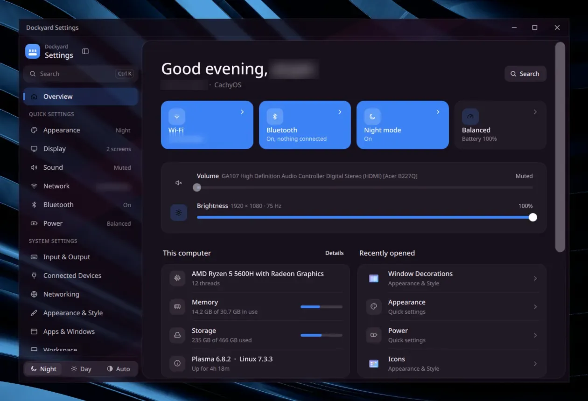
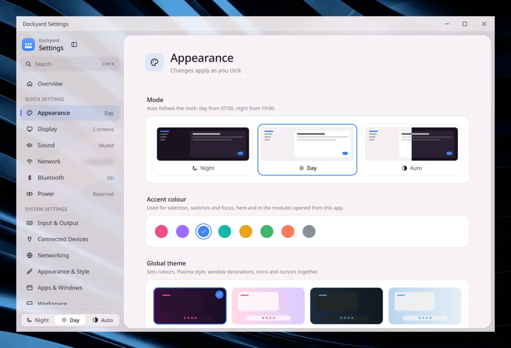
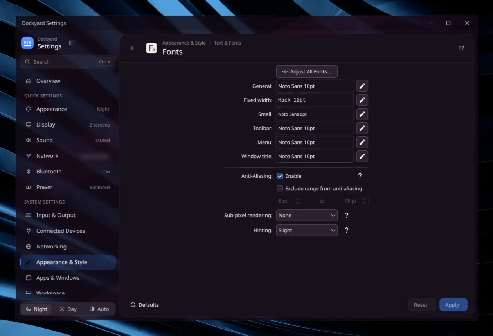

One window for every KDE System Settings module, the newer QML ones and the older widget ones. Six quick pages sit on top: Appearance, Display, Sound, Network, Bluetooth and Power.



Search everythingCtrl+K finds any page or module. Up, Down and Enter do the rest.
Night, Day or AutoAuto switches at 07:00 and 19:00. The sidebar and title bar are blurred glass.
One accentPick one of eight colors. It changes the accent across the desktop, not only in this window.
Modules that matchEmbedded modules take the window's colors, so they sit on the same surface as the rest.
Apply when readyDefaults, Reset and Apply sit under each module. Leaving with unsaved changes asks first.
Deep linksdockyard-settings kcm_fonts opens a module, and dockyard-settings sound a quick page.
A dashboard behind Start.
Set the Start style to Dashboard, and the Start tile and Meta open this instead of the launcher.
Weather with the next hours, and today's agenda. The + opens Google Calendar with a new event filled in.
Batteries of your mouse, headset or paired phone.
Continue: the track you paused and the files you opened last.
Right-click a card for its menu.
Hover the power button for Lock, Sleep and Restart. Shut down and Restart ask for a second click within four seconds.
Weather
24°H 29° · L 23°
Now24°1526°1627°1726°1825°
Today +
Stand-up10:00 to 10:15
Gym18:30 to 19:30
Devices
Mouse72%
Headset40%
Phone88%
Continue
Midnight DrivePaused
notes.md5 min ago
SettingsAll apps
Storage
And the rest of the dock.
Notifications
The dock runs Plasma's notification server, so you no longer need the stock Notifications widget.
New ones pop up by the dock with their buttons. Hover to keep one on screen.
A bell tile keeps the history, with Do Not Disturb and Clear all.
A job pill shows only while a file copy runs, with pause and stop.
Apps
App Setups open a set of apps together and tile them, or put each window back where you saved it.
Right-click an app for New Window, its own actions, Pin, Keep Above and Close.
Drop a .desktop file on the dock to pin it. Icons can grow under the pointer.
On a dock wider than the screen, swipe sideways on a trackpad to scroll it.
Tiles
Right-click the dock and choose Widgets… for a searchable gallery of all 32 tiles.
Stats draws CPU, RAM and disk as rings. Tap it for two-minute graphs.
Weather opens 12 hours, five days, sunrise, sunset and UV.
Clipboard history, several notes, the output of your own script, and Quick Share when rquickshare is installed.
Layout and look
Islands split the bar into three floating glass pills.
The day and night look switches the color scheme at sunrise and sunset for your weather location.
Two monitors can each have a dock. Toasts show on one, and Meta+1 to Meta+9 follow the focused screen.
The whole desktop matches.
The Glass Plasma style carries the dock's frosted dark material to panels, notifications, tooltips and popups. One switch in the dock's settings makes all of it solid.
DockyardFileEditView12:00
Focus round doneTake a five minute break.
Screenshot savedPictures/Screenshots
This month
Volume66%
Open Dolphin
12:00
Title bars you can see through.
Dockyard Glass is a window decoration with a translucent title bar on every window, and KWin blurs what is behind it. An Aurorae theme cannot ask for blur, so this is a native plugin. It is optional: ./setup.sh --decoration, then log out and back in.
Dolphin
Rounded top corners. They go square when the window is maximized or tiled to an edge.
Colors come from the window's color scheme, so Dockyard and Dockyard Day switch with it.
Close sits flush in the corner, fills the title bar's height and turns red on hover.
The full set.
A color scheme, a Kvantum app style, an Aurorae titlebar and a look-and-feel package that ties them to the Glass Plasma style, in a night set and a Day set. The look-and-feel package also brings a lock screen and splash screen, and --login adds a login wallpaper and boot splash. One script installs them, and one puts your old choices back.
Titlebar#1E1E23Window, dock and tooltip#16161AButton#3D3D40Accent#0A84FFLink#64D2FFPositive#30D158Neutral#FF9F0ANegative#FF3B30
Dolphin

OpenCopySearch files
Aurorae titlebar
Monochrome window buttons that match the dock.
Kate
Save
Solid
Menu
Kvantum app style
Frosted glass windows by default: DockyardGlass at night, DockyardDayGlass by day. Dockyard and DockyardDay are the solid versions, with glass menus and tooltips.
./setup.sh # night
./setup.sh --day # Day
# to undo later:
theme/restore-global.sh
Look-and-feel package
The script applies the package and picks the Kvantum theme, which a look-and-feel package cannot set. Both looks use Tela icons. Your current choices are saved first, so the restore script can put them back.
Install it.
git clone https://github.com/aryansoni57/dockyard
cd dockyard
./setup.sh
It checks what is missing, then installs the dock, the glass themes, the night look and the Settings app. Then add Dockyard to a panel from Add Widgets.
--day
The Day look instead of night.
--tela
Install the Tela icons the looks use.
--decoration
Glass title bars. Log out and in after.
--login
Login wallpaper and boot splash. Needs sudo.
--no-apply
Copy the files, keep your current theme.
--check
Only check dependencies.
Only want the dock? Run ./install-all.sh instead.
Needs KDE Plasma 6 and Kvantum. The Settings app also needs cmake, ninja, a C++ compiler and the KDE development packages, or skip it with --no-settings. Dockyard uses some private Plasma APIs, so a Plasma update can break it.